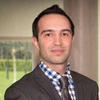

Welcome
Dr Farshad Ghassemi Toosi

My name is Farshad Ghassemi Toosi; I am a lecturer in the Department of Computer Science at Cork Institute of Technology (CIT) in Cork Ireland.
I graduated with a bachelor of science in Software Engineering in 2004, a Master of Science in 2009 and a PhD in 20017 from University of Limerick.
I was working in as a Post-doctoral researcher at Lero (The Irish Software Research Centre) in University of Limerick for around 3 years.
My main research fields include:
- Software Engineering: Feature Location, Source Code Analysing
- Data Visualization: Graph/network visualization, multidimensional data visualization
- Artificial Intelligence: Optimization Algorithms (Genetic Algorithms), NLP, Data (Text/Graph) Embedding